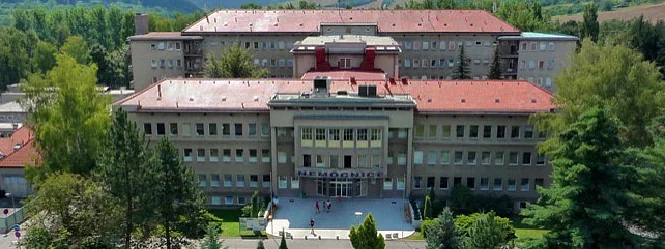
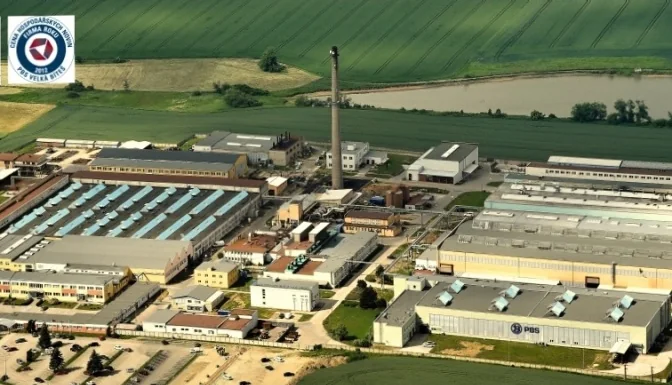

Přehled našich zakázek podle zákazníků.

Nemocnice Boskovice s.r.o.
- technické a ekonomické posouzení stavu energetického hospodářství nemocnice
- technické a ekonomické posouzení stavu prádelny nemocnice
- poradenství při výkonu licencované činnosti – prodeji tepla a elektrické energie

Nemocnice Prachatice, a.s.
- projektová dokumentace teplovodní kotelny 3,2 MW s dvěma kogeneračními jednotkami 208 kW (elektrického výkonu) a 284 kW (tepelného výkonu)
- projektová dokumentace parní kotelny 1,7 t páry/hod
- projektová dokumentace teplovodních rozvodů, předávacích stanic
- projektová dokumentace VZT jednotek

Nemocnice Břeclav
- projektová dokumentace parní kotelny výkonu 2 t páry/hod
- projektová dokumentace teplovodní kotelny 4,7 MW
- zásobování čistou párou pavilonu E (sterilizátory a vlhčení VZT), vlhčení VZT na pavilonu F a vlhčení VZT pavilonu B

Masarykův onkologický ústav
- projektová dokumentace pro novou plynovou parní kotelnu o výkonu 2 t páry/hod
- projektová dokumentace nových areálových rozvodů
- projektová dokumentace horkovodních předávacích stanic (přechod z parního média)
- projektová dokumentace nové středotlaké přípojky plynu

Oncomed manufacturing a.s.
- projektová dokumentace pro novou plynovou kotelnu s novou kogenerační jednotkou
SALVIS REAL ESTATE a.s.
- zpracování projektové dokumentace plynových rozvodů
SKR stav, s.r.o.
- instalace technologie tepelných čerpadel včetně systému měření a regulace o celkovém výkonu 0,5 MW v areálu Střední odborná škola a Střední odborné učiliště stavební v Brně – Bosonohách
Společenství vlastníků P. Jilemnického 360 a 361 v Adamově
- zpracování projektové dokumentace předávací stanice pro napojení objektu na solární technologii
Společenství vlastníků Sadová 23, 25, 27
- poradenství v oblasti energetiky
Střední odborná škola a Střední odborné učiliště stavební
- zpracování realizační projektové dokumentace vytápění areálu pomocí tepelných čerpadel
TENERGO Brno, a.s.
- dodávky a montáž technologie při instalaci kogeneračních jednotek v Tišnově
TEPLO T s.r.o.
- zpracování projektové dokumentace technologie parní a teplovodní kotelny včetně studie osazení kogeneračních jednotek a trigenerace v areálu Oncomed manufacturing Brno (Lachema)
- zpracování projektové dokumentace vytápění bytového domu v Modřicích
- zpracování projektové dokumentace technologie nasazení kogeneračních jednotek na kotelně K30 a K56 v Tišnově
Vysoká škola báňská – Technická univerzita Ostrava, Hornicko-geologická fakulta
- studie možnosti využití méněhodnotných paliv ve směsi s různými druhy biomasy pro průmyslové kotle a komunální sféru
Zásobování teplem s.r.o.
- zpracování komplexní projektové dokumentace osazení kogeneračních jednotek v objektech 4 kotelen v Blansku a kotelny v Boskovicích o celkovém el. výkonu 1,56 MW včetně trafostanic a vyvedení elektrického výkonu

První brněnská strojírna Velká Bíteš a.s.
- ekologizace a modernizace HU kotlů